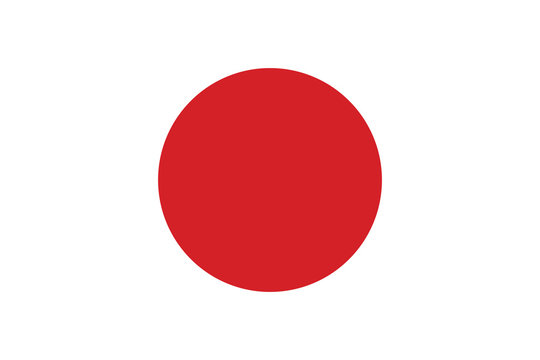
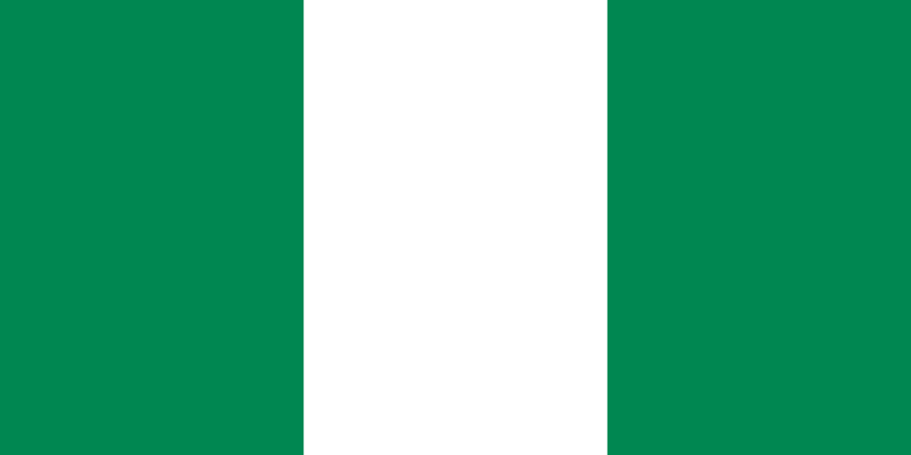

According to Merriam-Webster's Collegiate Dictonary the defintion of the word y e l l o w is:
A color whose hue resembles that of ripe lemons or sunflowers or is that of the portion of the spectrum lying between green and orange
The color yellow in North America is typically related to happiness! Even around the world this is similair. With research found from acolad.com, here is what yellow in different countires represents:
| Country | Yellow Translated | Meaning | |
|---|---|---|---|
| |
North America | Yellow (English) | happiness, hope, creativity, awareness |
|  | Japan | 黄色 (Japenese) | courage, purity, cheerfulness |
| |
India | पीला (Hindi) | peace, happiness, knowledge |
| |
China | 黄色的 (Mandirin) | health, royalty, honor, masculinity |
| |
France | Jaune (French) | jealous, betreyal, weakness, and contradiction |
|  | Nigeria | Edo edo (Igbo) | royalty, weath, and prosperity |
| |
Norway | Gul (Norwegian) | optimism, friendship, nature |
| |
South Africa | Geel (Afrikaans) | liberation, freedom, ruling |
Click to visit source Acolad.com!
Reviewing the information above you can see that most cultures agree that yellow is a positive color! The only one country, France, out of the eight listed had negative implications for the color yellow. Yellow is associated to the sun. Fun fact, areas with higher amounts of sun light, typically have more positive mental health rates than the opposite.
also more proof why it is the coolest color
What is your favorite color?